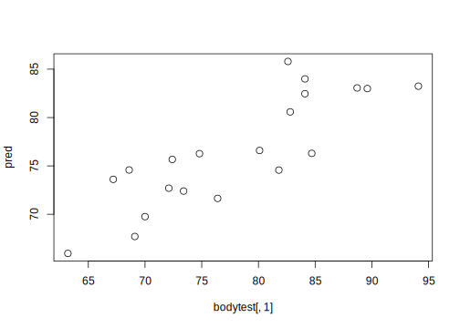

Dataset: bodydata
Training Samples
Create a training data set called bodytrain containing the first 20 observations only, by:
bodytrain <- bodydata[1:20,]Fitting Model
Fit one at a time three simple regression models with Weight as response and each of Height, Age and Circumference as predictors, name the models Model1, Model2 and Model3, respectively. Use the summary() function on each model to print out a summary of the fitted models. Use the first 20 observations as your training data.
model1 <- lm(Weight ~ Height, data = bodytrain)
model2 <- lm(Weight ~ Age, data = bodytrain)
model3 <- lm(Weight ~ Circumference, data = bodytrain)Understanding the fitted Model
- Test whether the three predictors are significant. Use a 5% test level.
The summary result for model1 is,
summary(model1)
Call:
lm(formula = Weight ~ Height, data = bodytrain)
Residuals:
Min 1Q Median 3Q Max
-11.516 -2.596 0.026 2.914 11.745
Coefficients:
Estimate Std. Error t value Pr(>|t|)
(Intercept) -38.231 38.360 -1.00 0.3322
Height 0.639 0.212 3.01 0.0076 **
---
Signif. codes: 0 '***' 0.001 '**' 0.01 '*' 0.05 '.' 0.1 ' ' 1
s: 5.84 on 18 degrees of freedom
Multiple R-squared: 0.334,
Adjusted R-squared: 0.297
F-statistic: 9.04 on 1 and 18 DF, p-value: 0.00757 Here, at 5% test level, Height is significant (p-value for Height is less than 0.05). The summary result for model2 is,
summary(model2)
Call:
lm(formula = Weight ~ Age, data = bodytrain)
Residuals:
Min 1Q Median 3Q Max
-15.084 -3.918 0.898 4.251 12.439
Coefficients:
Estimate Std. Error t value Pr(>|t|)
(Intercept) 80.745 14.563 5.54 0.000029 ***
Age -0.159 0.625 -0.25 0.8
---
Signif. codes: 0 '***' 0.001 '**' 0.01 '*' 0.05 '.' 0.1 ' ' 1
s: 7.14 on 18 degrees of freedom
Multiple R-squared: 0.00359,
Adjusted R-squared: -0.0518
F-statistic: 0.0648 on 1 and 18 DF, p-value: 0.802 Here, at 5% test level, Age is not significant (p-value for age is greater than 0.05). Finally, the summary result for model3 is,
summary(model3)
Call:
lm(formula = Weight ~ Circumference, data = bodytrain)
Residuals:
Min 1Q Median 3Q Max
-8.937 -3.540 0.038 2.956 8.659
Coefficients:
Estimate Std. Error t value Pr(>|t|)
(Intercept) 3.674 17.104 0.21 0.83234
Circumference 0.914 0.212 4.30 0.00043 ***
---
Signif. codes: 0 '***' 0.001 '**' 0.01 '*' 0.05 '.' 0.1 ' ' 1
s: 5.03 on 18 degrees of freedom
Multiple R-squared: 0.507,
Adjusted R-squared: 0.479
F-statistic: 18.5 on 1 and 18 DF, p-value: 0.000431 Here, at 5% test level, Circumference is significant (p-value for circumference is less than 0.05).
- Which model gives a better linear fit in terms of R-squared?
The model with Circumference as predictor has highest \(R^2\) among the models. This model explains 50.67 percent of variation present in the response Weight.
Compute the correlation matrix of the bodydtrain data by:
cormat <- cor(bodytrain)You can square the correlations by:
cormat ^ 2 Weight Height Age Circumference
Weight 1.00000 0.33440 0.00358748 0.50671271
Height 0.33440 1.00000 0.00167276 0.06116116
Age 0.00359 0.00167 1.00000000 0.00000422
Circumference 0.50671 0.06116 0.00000422 1.00000000- Compare the squared correlations under the
Weightcolumn with the R-squared values from the three models.
The square of correlation between each predictor variable with response is equals to the \(R^2\) obtained in model1, model2 and model3. However, this only applies to simple regression with one predictor.
If we “predict” the same observations as was used to fit the model, we get the so-called fitted values. These can be retrieved from the model1 by model1$fitted.values
- Compute the squared correlations between the
weightsofbodytrainand the fitted values ofmodel1.
cors <- cor(bodytrain[ , 1], model1$fitted.values)
cors ^ 2[1] 0.334- Compare with the R-squared of
model1
The square of correlation between the fitted values from a model with the response is equal to the \(R^2\) obtained from the model. This is a result which extends to multiple regression.
- For each model locate and compare the estimates for the error variance, \(\sigma^2\).
By applying the anova() function to each model object we obtain the analysis of variance tables containing the MSE, i.e. the Mean Sum of Squares of the Error (Residuals), which is the estimator for the error variance.
anova(model1)Analysis of Variance Table
Response: Weight
Df Sum Sq Mean Sq F value Pr(>F)
Height 1 308 308.3 9.04 0.0076 **
Residuals 18 614 34.1
---
Signif. codes: 0 '***' 0.001 '**' 0.01 '*' 0.05 '.' 0.1 ' ' 1anova(model2)Analysis of Variance Table
Response: Weight
Df Sum Sq Mean Sq F value Pr(>F)
Age 1 3 3.3 0.06 0.8
Residuals 18 919 51.0 anova(model3)Analysis of Variance Table
Response: Weight
Df Sum Sq Mean Sq F value Pr(>F)
Circumference 1 467 467 18.5 0.00043 ***
Residuals 18 455 25
---
Signif. codes: 0 '***' 0.001 '**' 0.01 '*' 0.05 '.' 0.1 ' ' 1- Which model has the smallest error variance estimate?
Model 3 has the smallest error variance estimate. We can also obtain the error variance estimate using the “Residual standard error” from the summary output since, \(MSE = s^2\).
Multiple Linear Regression and Prediction
- Fit a model 4 with both
HeightandCircumferenceas predictors.
model4 <- lm(Weight ~ Height + Circumference, data = bodytrain)
summary(model4)
Call:
lm(formula = Weight ~ Height + Circumference, data = bodytrain)
Residuals:
Min 1Q Median 3Q Max
-5.319 -3.536 -0.782 2.803 6.397
Coefficients:
Estimate Std. Error t value Pr(>|t|)
(Intercept) -70.820 28.452 -2.49 0.02346 *
Height 0.473 0.157 3.02 0.00770 **
Circumference 0.778 0.182 4.27 0.00051 ***
---
Signif. codes: 0 '***' 0.001 '**' 0.01 '*' 0.05 '.' 0.1 ' ' 1
s: 4.17 on 17 degrees of freedom
Multiple R-squared: 0.679,
Adjusted R-squared: 0.641
F-statistic: 18 on 2 and 17 DF, p-value: 0.0000638 - Get test observations for prediction: (Make a test data set called bodytest containing observations
21:40(Hint: Check how we madebodytrainabove))
bodytest <- bodydata[21:40, ]- Use
model4to predict the Weights of the testdata.
pred <- predict(model4, newdata = bodytest)- Make a scatter plot of the actually observed weights of the test data and the predicted weights.
plot(bodytest[ , 1], pred)
- Compute the squared correlation between the actually observed Weights and the predicted weights.
cor(pred, bodytest[ , 1]) ^ 2[1] 0.714What you get here is a so-called “prediction R-squared” of this model.
- Compare with the R-squared of
model4
The prediction R-squared is close to the R-squared of model4 (0.679) which indicates that the results from model4 generalize well to new observations.
Extra on R-squared
In statistics we aim at finding models which fit the data well. However, the R-squared may easily lead to overfitting of models, that is by including too many variables.
- Fit a model with all three predictors to the bodytrain data:
model5 <- lm(Weight ~ Height + Circumference + Age, data = bodytrain)
summary(model5)
Call:
lm(formula = Weight ~ Height + Circumference + Age, data = bodytrain)
Residuals:
Min 1Q Median 3Q Max
-5.409 -3.390 -0.912 3.040 6.983
Coefficients:
Estimate Std. Error t value Pr(>|t|)
(Intercept) -66.579 30.010 -2.22 0.04133 *
Height 0.477 0.160 2.98 0.00883 **
Circumference 0.777 0.186 4.18 0.00071 ***
Age -0.209 0.373 -0.56 0.58235
---
Signif. codes: 0 '***' 0.001 '**' 0.01 '*' 0.05 '.' 0.1 ' ' 1
s: 4.26 on 16 degrees of freedom
Multiple R-squared: 0.685,
Adjusted R-squared: 0.626
F-statistic: 11.6 on 3 and 16 DF, p-value: 0.000273 - Lets add some randomly generated junk from a normal distribution
Junk1 <- rnorm(n = 20, mean = 0, sd = 10)
Junk2 <- rnorm(20, 0, 10)
Junk3 <- rnorm(20, 0, 10)
model6 <- lm(Weight ~ Height + Circumference + Age +
Junk1 + Junk2 + Junk3, data = bodytrain)
summary(model6)
Call:
lm(formula = Weight ~ Height + Circumference + Age + Junk1 +
Junk2 + Junk3, data = bodytrain)
Residuals:
Min 1Q Median 3Q Max
-4.90 -2.94 -1.18 2.96 6.47
Coefficients:
Estimate Std. Error t value Pr(>|t|)
(Intercept) -45.2110 34.4211 -1.31 0.2117
Height 0.3716 0.1850 2.01 0.0659 .
Circumference 0.7785 0.2384 3.27 0.0061 **
Age -0.3277 0.4102 -0.80 0.4387
Junk1 -0.1569 0.1394 -1.13 0.2808
Junk2 0.1641 0.1367 1.20 0.2512
Junk3 -0.0771 0.1361 -0.57 0.5807
---
Signif. codes: 0 '***' 0.001 '**' 0.01 '*' 0.05 '.' 0.1 ' ' 1
s: 4.34 on 13 degrees of freedom
Multiple R-squared: 0.734,
Adjusted R-squared: 0.611
F-statistic: 5.98 on 6 and 13 DF, p-value: 0.00346 Exercises
- Compare models 5 and 6. What happens to the R-squared? (Compare also the adjusted R-squared values for models 5 and 6.)
The results will vary from time to time since we sample random junk, but in general we will observe that R-squared increase, whereas the adjuste R-squared decrease as we add more junk variables.
- Try to add 3 more junk variables,
Junk4,Junk5andJunk6.
Junk4 <- rnorm(n = 20, mean = 0, sd = 10)
Junk5 <- rnorm(20, 0, 10)
Junk6 <- rnorm(20, 0, 10)
model6 <- lm(Weight ~ Height + Circumference + Age + Junk1 + Junk2 + Junk3 +
Junk4 + Junk5 + Junk6, data = bodytrain)
summary(model6)
Call:
lm(formula = Weight ~ Height + Circumference + Age + Junk1 +
Junk2 + Junk3 + Junk4 + Junk5 + Junk6, data = bodytrain)
Residuals:
Min 1Q Median 3Q Max
-4.47 -2.07 1.04 1.92 4.34
Coefficients:
Estimate Std. Error t value Pr(>|t|)
(Intercept) -94.5392 34.6101 -2.73 0.0211 *
Height 0.6117 0.1901 3.22 0.0092 **
Circumference 0.7818 0.2005 3.90 0.0030 **
Age -0.0701 0.3488 -0.20 0.8448
Junk1 0.0822 0.1653 0.50 0.6295
Junk2 -0.0209 0.1469 -0.14 0.8897
Junk3 0.0488 0.1323 0.37 0.7197
Junk4 -0.2964 0.1181 -2.51 0.0309 *
Junk5 0.1626 0.1280 1.27 0.2326
Junk6 -0.0469 0.0826 -0.57 0.5822
---
Signif. codes: 0 '***' 0.001 '**' 0.01 '*' 0.05 '.' 0.1 ' ' 1
s: 3.55 on 10 degrees of freedom
Multiple R-squared: 0.863,
Adjusted R-squared: 0.74
F-statistic: 7.01 on 9 and 10 DF, p-value: 0.00269 - Observe the R-squared values (What is the lesson to be learned here?)
Adding variables and only observing R-squared may be misleading. We should at least also keep in mind that a simple model is better. Hence, if adding more variables does not increase R-squared very much, we should keep the simpler model. If in addition the difference between the R-squared and the adjusted R-squared starts to get large, it is a clear indicator of overfitting.